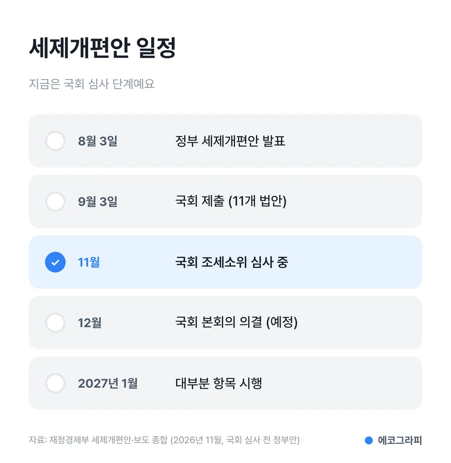
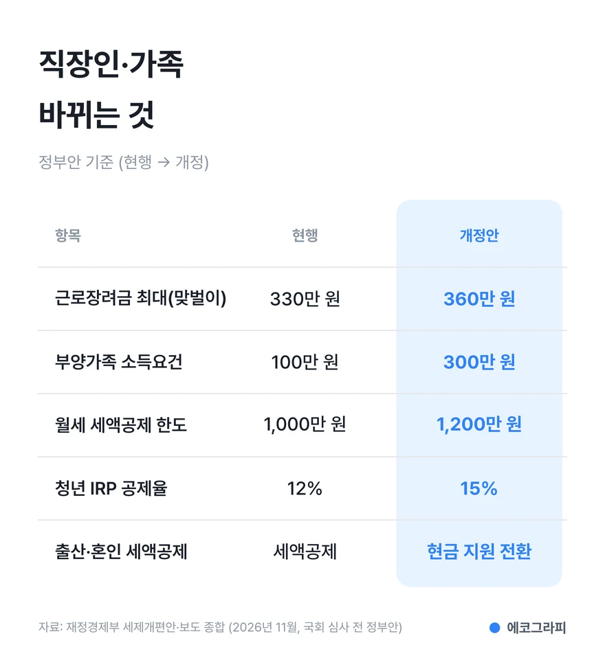
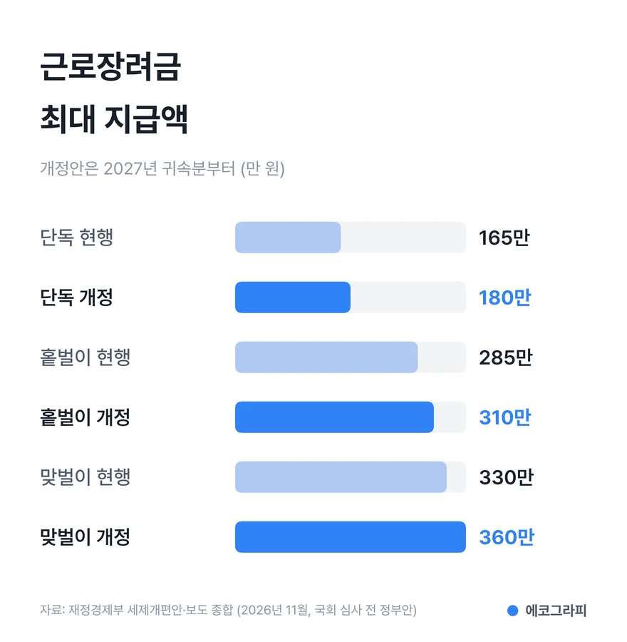
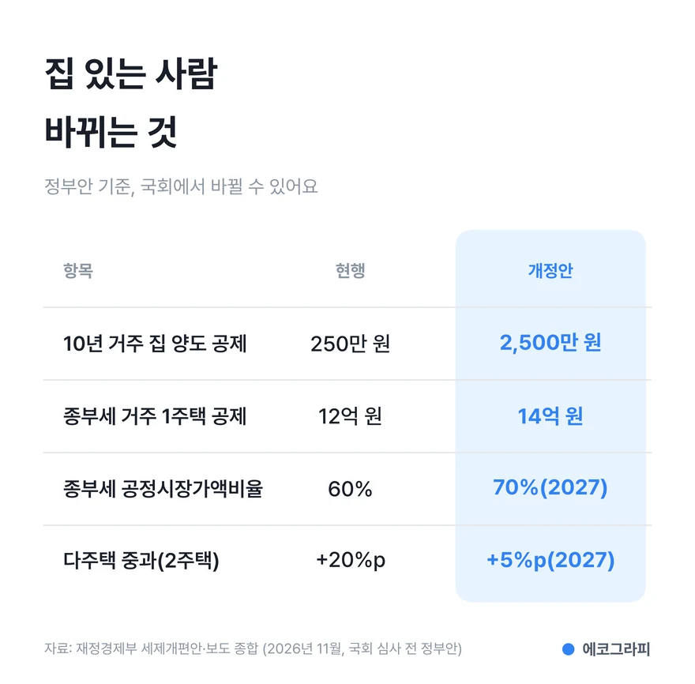

세제개편안은 정부가 "내년부터 세금을 이렇게 바꾸겠다"고 내놓는 계획이에요. 올해는 8월 3일에 발표됐고, 9월 국회에 법안으로 제출됐어요. 지금은 국회 조세소위원회가 하나씩 심사하는 단계라, 12월 본회의에서 통과돼야 확정이에요.

아직 확정이 아니에요. 이 글의 숫자는 정부안 기준이에요. 특히 종부세 비거주 1주택 공제액은 국회에서 논의가 이어지고 있어요. 확정되면 다시 정리할게요.



10년 넘게 살고 양도가액이 30억 원 이하인 집을 팔 때 양도세 기본공제가 250만 원에서 2,500만 원으로 크게 늘어요. 반대로 장기보유특별공제는 보유기간보다 실제 거주기간 중심으로 바뀌어요(2028년부터 단계 적용).
종부세는 2027년부터 거주 1주택 공제가 14억 원으로 오르지만, 공정시장가액비율이 60%에서 70%로 올라가고 1주택 세액공제에 금액 한도가 새로 생겨요. 사람마다 늘 수도, 줄 수도 있어요.
지금 해볼 것: 대부분 2027년부터라 올해 연말정산은 지금 기준 그대로예요. 다만 집을 팔 계획이 있다면 거주기간과 시행 시기를, 월세 사는 분은 내년 공제 한도를 미리 체크해 두세요.
대부분 2027년 1월 1일부터예요. 일부는 2027년 7월이나 2028년부터 단계 적용돼요. 국회 통과가 먼저예요.
아니에요. 올해 소득(2027년 초 연말정산)은 대부분 현행 기준이에요.
네. 특히 종부세 비거주 1주택 공제, 장기보유특별공제 조정 등이 논의 중이라 12월 확정안을 확인해야 해요.
개정안이 통과되면 2027년 소득분부터 적용돼서, 실제 지급은 2028년이에요.
※ 2026년 11월 기준으로 정리한 글입니다. 세율·제도는 바뀔 수 있으니 거래 전 증권사·국세청 안내를 한 번 더 확인하세요. 특정 종목·상품의 매수·매도 권유가 아닙니다.